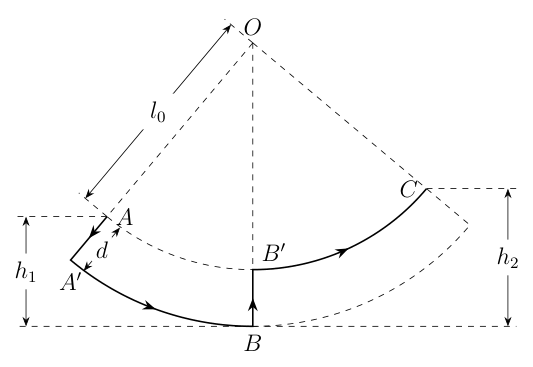
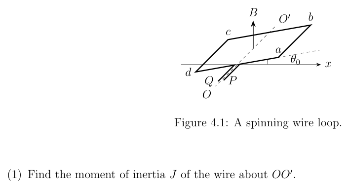
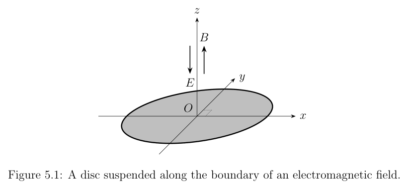
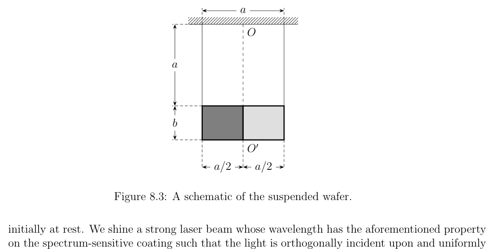

Problem 1 (35 points). Refer to Figure 1.1. Balls a and b of masses ma and mb respectively are placed on a smooth, electrically insulated, horizontal surface and joined by a light spring of natural length l0 and spring constant k0. b a l0 Figure 1.1: Two balls joined by a spring. (1) When t = 0, the spring is at its natural length, a has a rightward velocity of magnitude v0, and b is at rest. Assuming that the spring experiences elastic deformation throughout the motion, find the time-dependence of the velocities of a and b, va(t) and vb(t) respectively, for all t > 0. (2) Suppose each ball acquires the same charge such that the equilibrium length of the spring is L0. We denote Coulomb’s constant by K. Find the magnitude of said charge q and the frequency f of small oscillations of the system.
Topic: Oscillations & Waves, Electrostatics, Newtonian Mechanics Metodi: Simple Harmonic Motion Analysis, Conservation of Momentum, Coulomb’s Law Competenze: Mathematical Modeling, Physical Reasoning Objects: Ball, Spring Fonte: Testo (PDF) — p.1
Problema 1 (35 punti). Riferimento alla figura 1.1. Le palle a e b di massa ma e mb sono messe rispettivamente su una superficie liscia, isolata elettricamente, orizzontale e unita da una sorgente leggera di lunghezza naturale l0 e costante di primavera k0. b a l0 Figura 1.1: Due palle unite da una molla. (1) Quando t = 0, la molla è alla sua lunghezza naturale, a ha una velocità verso destra di magnitudo v0, e b
- E’ a riposo. Supponendo che la molla subisca una deformazione elastica durante il movimento, si trova la velocità di velocità di a e b, va(t) e vb(t) rispettivamente, per tutte le t > 0. (2) Supponiamo che ogni palla acquista la stessa carica in modo tale che la lunghezza di equilibrio della molla sia L0. Indichiamo la costante di Coulomb con K. Trova la grandezza di tale carica q e la frequenza f di piccole oscillazioni del sistema.
Topic: Oscillations & Waves, Electrostatics, Newtonian Mechanics Metodi: Simple Harmonic Motion Analysis, Conservation of Momentum, Coulomb’s Law Competenze: Mathematical Modeling, Physical Reasoning Objects: Ball, Spring Fonte: Testo (PDF) — p.1
Problem 2 (35 marks). Binary star systems are important observation targets for astronomers. We shall model one of these in this problem. Two stars of masses M and m, modelled as point masses, orbit about their barycentre in circular orbits with period T0. Star M suddenly explodes and loses some of its mass . We assume that the explosion occurs instantaneously and is isotropic relative to star M, such that the instantaneous velocity of star M = M after the explosion remains the same as the velocity of M before, and that the explosion and the resulting ejecta have no effect on star m. We are given the gravitational constant G and neglect the effects of general relativity. (1) Find the distance r0 between M and m before the explosion. (2) If M and m still orbit each other after the explosion, find the period T1 of this motion. (3) If M and m are ejected from orbit as a result of the explosion, derive all the conditions in order for this to be true, in terms of M, m, and . 1 Chinese Physics Olympiad
Topic: Gravitation, Astrophysics Metodi: Newton’s Law of Gravitation, Kepler’s Laws, Conservation of Energy Competenze: Mathematical Modeling, Physical Reasoning Objects: Star Fonte: Testo (PDF) — p.1
Il problema 2 (35 punti). I sistemi stellari binari sono obiettivi di osservazione importanti per gli astronomi. We Il modello di questo problema è uno di questi. Due stelle di massa M e m, modellate come masse puntate, orbitano intorno al loro baricentro in orbite circolari con periodo T0. La stella M esplode improvvisamente e perde alcuni di massa . Supponiamo che l’esplosione si verifichi istantaneamente ed è isotròpica rispetto alla stella M, in modo che la velocità istantanea della stella M = M dopo l’esplosione rimanga la stessa come la velocità di M prima, e che l’esplosione e l’ejecta risultante non hanno alcun effetto sulla stella m. Ci viene data la costante gravitazionale G e si trascurano gli effetti della relatività generale. (1) Trova la distanza r0 tra M e m prima dell’esplosione. (2) Se dopo l’esplosione M e m continuano ad orbitare l’uno sull’altro, si trova il periodo T1 di questo movimento. (3) Se M e m vengono espulsi dall’orbita a causa dell’esplosione, si derivano tutte le condizioni in modo che per essere vero, in termini di M, m e . 1 Olimpiada cinese di fisica
Topic: Gravitation, Astrophysics Metodi: Newton’s Law of Gravitation, Kepler’s Laws, Conservation of Energy Competenze: Mathematical Modeling, Physical Reasoning Objects: Star Fonte: Testo (PDF) — p.1
Problem 3 (35 points). Children who are well acquainted with the playground swing can force the seat to swing higher and higher by standing up and squatting at appropriate times.1 A boy of mass m is playing with a swing whose seat and suspension rods (not chains) are light and rigid. We assume that all the boy’s mass is concentrated at his centre of mass. When the boy stands, the distance between his centre of mass and the pivot of the swing is l, and when he squats, this distance is l + d. Realistically the boy should take a few moments to switch between the two postures, but we will ignore this. We model the situation as follows (see Figure 3.1 for an illustration): The boy squats instantaneously at point A, where he is momentarily at rest, from a standing position. Then he swings to point B, which is lower than A by h1, at which point he stands up (also instantaneously), such that his final radial speed is zero. Finally, the boy swings to point C, where he is again momentarily at rest. The process repeats in the opposite direction and so on, back and forth, such that the child swings higher with each successive swing. We assume that the force between the child and the seat is parallel to the suspension rods at all times. Take the gravitational potential energy to be zero at B. O A B C l0 h1 h2 d Figure 3.1: A model of a boy on a swing. The solid lines indicate the trajectory of the boy’s centre of mass. (1) Assuming that no mechanical energy is lost as the boy maintains his posture, e.g. as he squats from to B or stands from to C, find the boy’s mechanical energy during each of the four stages of his motion, A . Find also the change in his mechanical energy from A to C. (2) We now attempt to model the mechanical energy loss even as the boy maintains his posture. We assume that the relationship between the energy loss and the absolute value of the change in height is given by = ( k1mg(h0 + ) when the boy is squatting, and 0 + ) when the boy is standing, where 0 < k1, k2 < 1, h0, and 0 are constants and g is the gravitational acceleration. Taking the horizontal at B as the ground, find 1Translator’s note. It was common for Chinese children (and perhaps, even now, daring mad lads both in China and elsewhere) to stand, rather than sit, on the seats of playground swings. Due to sanitary and safety concerns, we are not recommending that you try this at your local playground. 2 Chinese Physics Olympiad (i) the relationship between hn, the boy’s distance from the ground when he becomes momentarily at rest for the nth time (counting point A as the first time, as shown in Figure 3.1), and hn+1, the distance for the (n + 1)th time; and (ii) the relationship between hn and h1 and between hn+1 and h1.

Modello ragazzo su altalenaTopic: Conservation of Energy, Oscillations & Waves, Newtonian Mechanics Metodi: Energy Conservation Method, Conservation Laws, Simple Harmonic Motion Analysis Competenze: Mathematical Modeling, Physical Reasoning Objects: Pendulum Fonte: Testo (PDF) — p.2
Il problema 3 (35 punti). I bambini che conoscono bene lo swing del parco giochi possono costringere il sedile Per svingere sempre più in alto, alzando e squattando in momenti appropriati.1 giocare con uno swing il cui sedile e le barre di sospensione (non le catene) sono leggere e rigide. Supponiamo che tutta la massa del ragazzo è concentrata nel suo centro di massa. Quando il ragazzo si trova, la distanza tra il suo centro di massa e il pivot dello swing è l, e quando si accovaccia, questa distanza è l + d. Realistico Il ragazzo dovrebbe prendere qualche momento per passare tra le due posture, ma ignoreremo questo. We La situazione è modellata come segue (vedi figura 3.1 per un’illustrazione): il ragazzo si accovacca istantaneamente a punto A, dove è momentaneamente a riposo, da una posizione fermata. Poi si svinge verso il punto B, che è inferiore a A per h1, punto in cui si alza (anche istantaneamente), in modo che il suo ultimo radial La velocità è zero. Infine il ragazzo si sposta verso il punto C, dove si trova di nuovo in un momento di riposo. Il processo si ripete nella direzione opposta e così via, avanti e indietro, in modo che il bambino si svinga più in alto con ogni svinguta successiva. Supponiamo che la forza tra il bambino e il sedile sia parallela alla sospensione
- Le barre in ogni momento. Prendiamo l’energia potenziale gravitazionale a zero a B. O A B C l0 h1 h2 d Figura 3.1: Un modello di un ragazzo su uno swing. Le linee solide indicano la traiettoria del centro del bambino
- Mass. (1) Supponendo che non si perda alcuna energia meccanica mentre il ragazzo mantiene la sua postura, ad esempio mentre si accovaccia da a B o da a C, trovare l’energia meccanica del ragazzo durante ognuna delle quattro le fasi della sua mozione, A . Trova anche il cambiamento nella sua energia meccanica da A a C. (2) Ora cerchiamo di modellare la perdita di energia meccanica anche mentre il ragazzo mantiene la sua postura. We presumere che la relazione tra la perdita di energia e il valore assoluto della variazione di Alto è indicato da = ( k1mg(h0 + ) quando il ragazzo si accovaccia, 0 + ) quando il ragazzo si alza, in cui 0 < k1, k2 < 1, h0 e 0 sono costanti e g è l’accelerazione gravitazionale. Prendendo il orizzontale a B come terreno, trovare 1Nota del traduttore. Era comune per i bambini cinesi (e forse, anche ora, osare ragazzi pazzi sia in Cina e In altre parti) di stare, piuttosto che sedersi, sui sedili di swing di parco giochi. Per motivi sanitari e di sicurezza, non siamo raccomandando di provare questo nel vostro parco giochi locale. 2 Olimpiada cinese di fisica
- la relazione tra hn e la distanza del bambino dal suolo quando si trova momentaneamente a riposo per la nona volta (punto di conteggio A come prima volta, come mostrato alla figura 3.1), e hn+1, la distanza per la (n + 1) prima volta; e
- il rapporto tra hn e h1 e tra hn+1 e h1.
Modello ragazzo su altalena
Topic: Conservation of Energy, Oscillations & Waves, Newtonian Mechanics Metodi: Energy Conservation Method, Conservation Laws, Simple Harmonic Motion Analysis Competenze: Mathematical Modeling, Physical Reasoning Objects: Pendulum Fonte: Testo (PDF) — p.2
Problem 4 (35 points). Refer to Figure 4.1. A square wire loop abcd having uniform density, mass m, side length l, and resistance R lies in a uniform magnetic field of magnitude B which points vertically upwards. The loop can rotate freely about the axis , which passes through the midpoints of sides ad and bc. The two ends of the loop are connected to the leads P and Q. and the x-axis are coplanar and orthogonal. We neglect the self-inductance of the wire loop. x O P a b c d Q B Figure 4.1: A spinning wire loop. (1) Find the moment of inertia J of the wire about . (2) When t = 0, the wire is at rest and its plane makes a small angle with the x-axis. At this instant, we force a steady current I through the wire in the direction given by P . Find the subsequent relationship between , ̇\theta, and ̈\theta, where is the angle between the the plane of the wire and the x-axis. (3) When t = t0 > 0, the wire reaches a horizontal position again, whereupon we disconnect the current source between leads P and Q. Describe the subsequent motion of the wire. Hence, derive an expression for the potential difference VPQ between P and Q. (4) We allow the wire to undergo the above motion for a period of time. We short leads P and Q when the angle between the plane of the wire and the x-axis is somewhere within the range . The wire will come to rest after rotating through an angle . Find the relationship between and . Find also the minimum value of . 3 Chinese Physics Olympiad

Spira quadrata rotante campo magneticoTopic: Electromagnetic Induction, Magnetism, Rotational Dynamics Metodi: Lorentz Force Analysis, Faraday’s Law of Induction, Torque & Angular Momentum Analysis Competenze: Mathematical Modeling, Physical Reasoning Objects: Wire Fonte: Testo (PDF) — p.3
Il problema 4 (35 punti). Si riferisce alla figura 4.1. Un circuito di filo quadrato abcd con densità uniforme, massa m, lunghezza laterale l, e la resistenza R si trova in un campo magnetico uniforme di magnitudo B che punta verticalmente
- Su. Il ciclo può ruotare liberamente intorno all’asse , che passa attraverso i punti medi dei lati ad e bc. Le due estremità del ciclo sono collegate alle condotte P e Q. e l’asse x sono coplanari e ortogonale. Non si vede l’auto-induzione del circuito. x O P a b c d Q B Figura 4.1: un circuito di filo a rotazione. (1) Trova il momento di inerzia J del filo circa . (2) Quando t = 0, il filo è a riposo e il suo piano fa un angolo piccolo con l’asse x. In questo istante, costringono una corrente costante I attraverso il filo nella direzione data da P . Trova la relazione successiva tra , ̇\theta e ̈\theta, dove è l’angolo tra il piano di filo e dell’asse x. (3) Quando t = t0 > 0, il filo raggiunge di nuovo una posizione orizzontale, dopo la quale si disconnette il filo di fonte di corrente tra le linee P e Q. Descrivere il successivo movimento del filo. Di conseguenza, derivati un’espressione per la differenza potenziale VPQ tra P e Q. (4) Per un certo periodo di tempo, il filo può subire il movimento sopra indicato. - Proviamo a scartare le piste P e Q. quando l’angolo tra il piano del filo e l’asse x è da qualche parte all’interno del range . Il filo si sosterrà dopo aver rotato in un angolo . Trova il Relazione tra e . Trova anche il valore minimo di . 3 Olimpiada cinese di fisica
Spira quadrata rotante campo magnetico
Topic: Electromagnetic Induction, Magnetism, Rotational Dynamics Metodi: Lorentz Force Analysis, Faraday’s Law of Induction, Torque & Angular Momentum Analysis Competenze: Mathematical Modeling, Physical Reasoning Objects: Wire Fonte: Testo (PDF) — p.3
Problem 5 (35 points). Refer to Figure 5.1. A thin disc of radius R is placed in the xy-plane such that its centre is at the origin O. The region above the xy-plane (i.e. z > 0) is filled with a uniform electric field with magnitude E pointing in the direction, whereas the cylindrical region bounded by the xy-plane below and the cylinder with infinite length whose base is said disc (i.e. z > 0 and x2 +y2 < R2) is filled with a uniform magnetic field B pointing in the +z direction. The region outside this cylinder has zero magnetic field. Now suppose we fire particles carrying charge q, mass m, and speed v from O in all directions above the xy-plane in an isotropic manner (i.e. the probability of being fired in a certain direction is the same regardless of said direction). We ignore the effects of gravity and the interaction between the charges. O x y z E B Figure 5.1: A disc suspended along the boundary of an electromagnetic field. (1) Suppose that all collisions of the charges with the disc are elastic, and that = 50% of the charges are constrained by the electric and magnetic fields to remain within the cylindrical region. Find the radius R of the disc. (2) We now introduce a model of non-elastic collisions. Suppose that, when a charge collides with the disc, the direction of the perpendicular component of its velocity is reversed, while that of the parallel component is unperturbed. Suppose further that the magnitudes of both components are reduced by the same proportion such that the kinetic energy of the charge is reduced by 10%. (i) Consider the projection of the charge’s location onto the xy-plane. Find the length of the path travelled by the projection during the period between the ejection of the charge and its first collision with the disc. (ii) Now consider the charge whose projection traverses the greatest distance as described in (i). Find the distance travelled by the particle from its ejection until it comes to rest on the disc. We are given the integral Z 1 + u2 du = 1 2u 1 + u2 + 1 2 ln
u + 1 + u2
- C, where C is a constant of integration. 4 Chinese Physics Olympiad

Disco in campo elettromagnetico cilindricoTopic: Electromagnetism, Magnetism, Conservation of Energy Metodi: Lorentz Force Analysis, Energy Conservation Method, Calculus-Integration Competenze: Mathematical Modeling, Physical Reasoning Objects: Disk Fonte: Testo (PDF) — p.4
Il problema 5 (35 punti). Si riferisce alla figura 5.1. Un sottile disco di raggio R è collocato nel piano xy in modo tale che il suo centro si trova all’origine O. La regione sopra il piano xy (cioè z > 0) è riempito di un’elettricità uniforme campo con magnitudo E che punta nella direzione , mentre la regione cilindrica delimitata dalla piano xy di sotto e il cilindro di lunghezza infinita la cui base è detto disco (cioè z > 0 e x2 +y2 < R2) è riempito da un campo magnetico uniforme B che punta nella direzione +z. La regione al di fuori di questo cilindro ha zero campo magnetico. Ora supponiamo di sparare particelle che portano carica q, massa m, e velocità v da O in tutte le direzioni sopra il piano xy in modo isotropo (cioè la probabilità di essere fucilata in un determinato La direzione è la stessa indipendentemente dalla direzione indicata). Ignoriamo gli effetti della gravità e l’interazione tra le accuse. O x y z E B Figura 5.1: Disco sospeso lungo il confine di un campo elettromagnetico. (1) Supponiamo che tutte le collisioni delle cariche con il disco siano elastiche e che = 50% delle cariche sono limitati dai campi elettrici e magnetici a rimanere all’interno della regione cilindrica. Trova il raggio R del disco. (2) Ora introduciamo un modello di collisioni non elastiche. Supponiamo che, quando una carica si schianta con Il disco, la direzione della componente perpendicolare della sua velocità è inversa, mentre quella della la componente parallela è inalterata. Supponiamo inoltre che le magnitudini di entrambi i componenti siano ridotto della stessa percentuale in modo tale che l’energia cinetica della carica sia ridotta del 10%. (i) Considerare la proiezione della posizione della carica sul piano xy. Trova la lunghezza del percorso percorso dalla proiezione nel periodo tra l’esposizione della carica e la sua prima collisione con il disco. (ii) Ora consideriamo la carica la cui proiezione attraversa la distanza più grande come descritto a (i). Trova la distanza percorsa dalla particella dall’ejezione fino a quando non si riposa sul disco. Ci viene data l’integrale Z 1 + u2 du = 1 2u 1 + u2 + 1 2 ln
u + 1 + u2
- C, dove C è una costante di integrazione. 4 Olimpiada cinese di fisica
*Disco in campo elettromagnetico cilindrico *
Topic: Electromagnetism, Magnetism, Conservation of Energy Metodi: Lorentz Force Analysis, Energy Conservation Method, Calculus-Integration Competenze: Mathematical Modeling, Physical Reasoning Objects: Disk Fonte: Testo (PDF) — p.4
Problem 6 (35 points). Consider a capillary tube having length 6.00 cm, inner radius 0.500 mm, and outer radius 5.00 mm. (1) We fix the tube in a vertical position and inject water into it, such that a small amount of water protrudes from the lower end but does not fall. The column of water above it remains at rest due to the effects of surface tension. Given that the distance between the centre of the upper end of the column and the lowest point of the column is 3.50 cm, find the radius of curvature a of the lower interface between the water and the air. (2) We remove the water in (1) and submerge 1/3 of the tube in water. An external upward force is applied to the tube such that it remains at rest. Find the magnitude of this force. We are given that the density of glass is twice that of water, the density of water 1.00 103 kg , the coefficient of surface tension of water 7.27 N , and the gravitational acceleration 9.80 m . We may assume that the angle between the upper interface and the glass wall is zero.
Topic: Fluid Mechanics Metodi: Hydrostatic Equilibrium, Physical Modeling, Free-Body Diagram Competenze: Mathematical Modeling, Physical Reasoning Objects: Tube Fonte: Testo (PDF) — p.5
Il problema 6 (35 punti). Considerare un tubo capillare di lunghezza 6,00 cm, raggio interno 0,500 mm e radius esterno 5,00 mm. (1) Fermino il tubo in posizione verticale e iniettiamo acqua in esso, in modo che una piccola quantità di acqua si estende dall’estremità inferiore ma non cade. La colonna d’acqua sopra di essa rimane in riposo dovuto agli effetti della tensione superficiale. Dato che la distanza tra il centro della parte superiore del la colonna e il punto più basso della colonna è di 3,50 cm, trovare il raggio di curvatura a della interfaccia inferiore tra l’acqua e l’aria. (2) Eliminiamo l’acqua nel (1) e immergiamo 1/3 del tubo in acqua. Una forza esterna verso l’alto è applicato sul tubo in modo che rimanga a riposo. Trova l’entità di questa forza. Si dà che la densità del vetro è doppia di quella dell’acqua, la densità dell’acqua è di 1,00 103 kg , il il coefficiente di tensione superficiale dell’acqua 7,27 N e l’accelerazione gravitazionale 9,80 m . Possiamo supporre che l’angolo tra l’interfaccia superiore e la parete di vetro sia zero.
Topic: Fluid Mechanics Metodi: Hydrostatic Equilibrium, Physical Modeling, Free-Body Diagram Competenze: Mathematical Modeling, Physical Reasoning Objects: Tube Fonte: Testo (PDF) — p.5
Problem 7 (35 points). (1) The equivalence principle, first elucidated by Albert Einstein in 1911, states that the laws of physics in a reference frame with gravity present are the same as those in some accelerating reference frame without gravity, provided that the acceleration is equal to a certain value. We study this principle by considering the following two examples. (i) When a beam of light travels from a place of low gravitational potential to another place of a high gravitational potential, its wavelength increases. This phenomenon is known as gravitational redshift. Now consider a spherical body (say, a planet) with uniform density. Suppose that a beam of light with wavelength is emitted vertically upwards from a point source A near the surface of the planet. The light beam is detected by a fixed receiver B vertically above A such that AB = L. Find the wavelength of the light detected by B. We are given the mass of the planet M, its radius R (where R ), the speed of light c, and the gravitational constant G. We may assume the weak field approximation applies, i.e. we may freely use the results of the Newtonian theory of gravity. (ii) Refer to Figure 7.1. Suppose that a box whose length is L is suspended in free space. A laser source A and a receiver B are fixed at the lower and upper ends of the box respectively. When time t = 0, the box begins to accelerate from rest with magnitude a along the direction of AB, where aL . Simultaneously, a laser beam of wavelength is emitted from A. Using the results of special relativity, find the wavelength of the light received at B. A B a L Figure 7.1: A gravity-independent demonstration of gravitational redshift. (iii) Compare the results of (i) and (ii). How large should a be, in order for us to have = ? 5 Chinese Physics Olympiad (2) Gravitational redshift was first observed by M ̈ossbauer spectroscopy near the Earth’s surface, since the M ̈ossbauer spectrometer allows physicists to determine the energy of gamma ray photons to a high precision. The setup is as follows: As in (1)(i), we place a fixed gamma ray source whose frequency is at a point A near Earth’s surface. We place a M ̈ossbauer spectrometer at point B. We now make the following key assumption: that the spectrometer can only detect photons with frequency as measured in the reference frame where it is at rest. In order for the emitted photons to be detectable, the spectrometer must maintain a downward velocity. This experiment was conducted multiple times in a tower of the Jefferson Physical Laboratory at Harvard University by a team led by R. Pound, G. Rebka, and J. Snider from 1960 to 1964, in which L = 22.6 m. Find the speed of the spectrometer at the instant when the photons from A were detected. We are given the gravitational acceleration g = 9.80 m and the speed of light in vacuum c = 3.00 108 m .
Topic: Gravitation, Special Relativity, Modern-Quantum Physics Metodi: Lorentz Transformation, Photon Energy Relation, Approximation & Series Expansion Competenze: Mathematical Modeling, Physical Reasoning Objects: Planet, Photon Fonte: Testo (PDF) — p.5
Il problema 7 (35 punti). (1) Il principio di equivalenza, chiarito per la prima volta da Albert Einstein nel 1911, Le leggi della fisica in un quadro di riferimento con la gravità presente sono le stesse di quelle in un quadro di riferimento accelerante senza gravità, purché l’accelerazione sia uguale a un un certo valore. Esamineremo questo principio esaminando i seguenti due esempi. (i) Quando un raggio di luce viaggia da un luogo di basso potenziale gravitazionale ad un altro luogo di un elevato potenziale gravitazionale, la sua lunghezza d’onda aumenta. Questo fenomeno è conosciuto come spostamento di gravità verso il rosso. Ora consideriamo un corpo sferico (per esempio un pianeta) di densità uniforme. Supponiamo che un raggio di luce con lunghezza d’onda venga emesso verticalmente verso l’alto da un punto Fonte A vicino alla superficie del pianeta. Il fascio di luce viene rilevato da un ricevitore fisso B verticalmente sopra A in modo tale che AB = L. Trova la lunghezza d’onda della luce rilevata da B. Ci viene data la massa del pianeta M, il suo raggio R (dove R ), la velocità della luce c, e la costante gravitazionale G. Possiamo presumere che si applichi l’approssimazione del campo debole, cioè we La teoria della gravità di Newton può essere liberamente utilizzata. ii) Si riferisce alla figura 7.1. Supponiamo che una scatola di lunghezza L sia sospesa nello spazio libero. A la fonte laser A e un ricevitore B sono fissate rispettivamente alle estremità inferiore e superiore della scatola. Quando il tempo t = 0, la scatola inizia ad accelerare dal riposo con magnitudo a lungo la direzione of AB, dove aL . Simultaneamente, da A viene emesso un raggio laser di lunghezza d’onda . Usando i risultati della relatività speciale, si trova la lunghezza d’onda della luce ricevuta a B. A B a L Figura 7.1: Una dimostrazione indipendente dalla gravità del spostamento al rosso gravitazionale.
- confrontare i risultati dei punti i) e ii). Quanto grande dovrebbe essere un, per avere = ? 5 Olimpiada cinese di fisica (2) Lo spostamento al rosso gravitazionale è stato osservato per la prima volta dalla spettroscopia di M ̈ossbauer vicino alla superficie terrestre, poiché Il spettrometro M ̈ossbauer permette ai fisici di determinare l’energia dei fotoni a raggi gamma
- Un’alta precisione. La configurazione è la seguente: Come in (1) ((i), posizionamo una fonte fissa di raggi gamma la cui la frequenza è in un punto A vicino alla superficie terrestre. Si colloca uno spettrometro Mossbauer in punto B. Ora facciamo la seguente ipotesi chiave: che lo spettrometro può rilevare solo i fotoni con frequenza misurata nel quadro di riferimento in cui è a riposo. Per quanto riguarda le emissioni per rilevare i fotoni, lo spettrometro deve mantenere una velocità verso il basso. Questo esperimento E ’ stato condotto più volte in una torre del Jefferson Physical Laboratory dell’ Università di Harvard . da una squadra guidata da R. - Pound, G. Rebka e J. Snider dal 1960 al 1964, in cui L = 22,6 m. Trova la velocità dello spettrometro nel momento in cui i fotoni da A sono stati rilevati. Ci viene data l’accelerazione gravitazionale g = 9,80 m e la velocità della luce nel vuoto c = 3.00 108 m .
Topic: Gravitation, Special Relativity, Modern-Quantum Physics Metodi: Lorentz Transformation, Photon Energy Relation, Approximation & Series Expansion Competenze: Mathematical Modeling, Physical Reasoning Objects: Planet, Photon Fonte: Testo (PDF) — p.5
Problem 8. A sample of gallium nitride on silicon (GaN/Si) was prepared by depositing a thin layer of gallium nitride uniformly on a silicon wafer, as shown in Figure 8.1. silicon base gallium nitride Figure 8.1: A wafer of GaN/Si. (1) When a beam of light with wavelengths in the range 400 nm–1200 nm is orthogonally incident upon the GaN/Si wafer, and the reflected light measured, we observe that two particular wavelengths are amplified by thin-film interference, one of which is 600 nm. The relationship between the refractive index n of the GaN and the wavelength of incident light from a vacuum, i.e. the dispersion relation, is given by n2 = 2.262 + 330.12 , whereas the refractive index of silicon is within the range 3.49–5.49. By considering reflection at the GaN surface and the GaN/Si interface, determine the thickness of the GaN layer and the value of the second amplified wavelength. (2) On the other side of the wafer, two kinds of spectrum-selective materials are coated uniformly on each half of the wafer, as shown in Figure 8.2. For light whose wavelength is a certain value, the coating on the left half is completely absorbent, while that on the right half is completely reflective. left half right half silicon base gallium nitride spectrum-selective material Figure 8.2: A coated GaN/Si wafer. As shown in Figure 8.3, we suspend the wafer from a fixed support with two strings whose lengths are both a such that the strings are vertical. The wafer has length a and width b, and is allowed to rotate about the axis , which causes it to move up and down simultaneously. The wafer is 6 Chinese Physics Olympiad O a a b a/2 a/2 Figure 8.3: A schematic of the suspended wafer. initially at rest. We shine a strong laser beam whose wavelength has the aforementioned property on the spectrum-sensitive coating such that the light is orthogonally incident upon and uniformly distributed over the surface of the wafer, and wait until the wafer has rotated about to a position where it is stationary again. The direction of the beam remains unchanged throughout the process. The coating is illuminated at all times. We neglect the effects of the radiation on the thin edges of the wafer. We are given the thickness and density of the silicon wafer, the thickness d and density of the GaN layer, and neglect the mass of the coating. We are also given the vacuum permittivity and the gravitational acceleration g. Find the rms value E of the electric field associated with the laser such that the wafer rotates through a given angle . (3) Taking the values E = 5.00 104 V , = 3.00 m, = 2.33 103 kg , = 6.10 103 kg , = 8.85 F , and g = 9.80 m , determine the value of . 7

Wafer GaN/Si sospeso schemaTopic: Wave Optics, Electromagnetism, Rotational Dynamics Metodi: Interference & Diffraction Analysis, Torque & Angular Momentum Analysis, Energy Conservation Method Competenze: Mathematical Modeling, Physical Reasoning Objects: String Fonte: Testo (PDF) — p.6
Problema 8. Un campione di nitruro di gallio su silicio (GaN/Si) è stato preparato depositando uno strato sottile di nitruro di gallio uniformemente su una valigia di silicio, come mostrato alla figura 8.1. base di silicio nitruro di gallio Figura 8.1: una vaffa di GaN/Si. (1) Quando un raggio di luce con lunghezze d’onda nell’intervallo 400 nm1200 nm è ortogonalmente inciso su La luce riflessa misurata, osservando che due lunghezze d’onda particolari sono amplificate da interferenze a film sottile, una delle quali è di 600 nm. La relazione tra le Indice di rifrazione n della GaN e lunghezza d’onda della luce incidente da un vuoto, ovvero il Relazione di dispersione, è data da n2 = 2.262 + 330.12 , considerando che l’indice di rifrazione del silicio è nell’intervallo di 3,495,49. Considerando la riflessione la superficie GaN e l’interfaccia GaN/Si determinano lo spessore dello strato GaN e il valore di seconda lunghezza d’onda amplificata. (2) L’altro lato della vaffa è rivestito uniformemente da due tipi di materiali selettivi di spettro su ciascuna metà del wafer, come mostrato alla figura 8.2. Per la luce la cui lunghezza d’onda è un certo valore, il rivestimento della metà sinistra è completamente assorbente, mentre quello della metà destra è completamente riflessiva. metà sinistra metà destra base di silicio nitruro di gallio materiale selettivo per lo spettro Figura 8.2: Wafer rivestito di GaN/Si. Come mostrato alla figura 8.3, sospendiamo la vaffa da un supporto fisso con due stringhe le cui lunghezze sono entrambi tali che le corde siano verticali. La vaffa ha lunghezza a e larghezza b e è consentita per ruotare intorno all’asse , che fa sì che si muova in su e in giù contemporaneamente. Il wafer è 6 Olimpiada cinese di fisica O a a b a/2 a/2 Figura 8.3: Schema della vaffa sospesa. Inizialmente in riposo. Luchiamo un forte raggio laser la cui lunghezza d’onda ha la proprietà di cui sopra sul rivestimento sensibile allo spettro in modo tale che la luce incida ortogonalmente su di esso e uniformemente distribuita sulla superficie della vaffa e attesa che la vaffa abbia girato circa in una posizione in cui è ancora fermo. La direzione del raggio rimane invariata Il processo. Il rivestimento è illuminato in ogni momento. Non si tratta di un’azione di i bordi sottili della vaffa. Ci sono state date le spesse e la densità della vaffa di silicio, le spesse d e la densità di la strato GaN, e trascurare la massa del rivestimento. Ci viene data anche la permissività del vuoto e l’accelerazione gravitazionale g. Trova il valore rms E del campo elettrico associato a il laser in modo tale che la valigia ruota attraverso un angolo determinato . (3) Prendendo i valori E = 5,00 104 V , = 3,00 m, = 2,33 103 kg , = 6.10 103 kg , = 8,85 F , e g = 9,80 m , determinare il valore di . 7
Sistema di sospeso Wafer GaN/Si
Topic: Wave Optics, Electromagnetism, Rotational Dynamics Metodi: Interference & Diffraction Analysis, Torque & Angular Momentum Analysis, Energy Conservation Method Competenze: Mathematical Modeling, Physical Reasoning Objects: String Fonte: Testo (PDF) — p.6